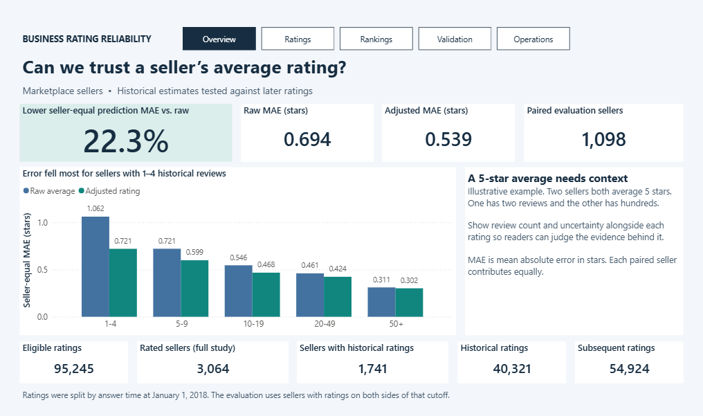

Original Power BI Desktop report
Marketplace rating reliability
Can accounting for review volume improve predictions of later customer ratings? Explore the five report pages in a browser demonstration built from the original Power BI work.
Explore the report

Original Desktop capture View full size- Report pages
- 5
- Imported tables
- 15
- Active relationships
- 6
- DAX measures
- 102
The report data could not load. Reload this page to try again.
Historical holdout
Review volume improved rating estimates
The adjustment helped most among sellers with just one to four historical reviews.
Prediction error by historical review volume
Seller-equal MAE in stars · lower is better
Inspect a review band
Pick a band to see the evidence behind its comparison.
Synthetic demonstration
See how review volume changes the estimate
These fictional sellers were constructed independently. Select a point or seller to compare the raw and adjusted ratings.
The browser links fictional selections to the evidence card. The native scatter provides real seller detail and model-conditional intervals locally. The browser example displays point estimates.
Ranking sensitivity
Adjustment can change a shortlist
In the study, the raw and adjusted Top 10 shared zero sellers under every feasible ordering of ties at the raw cutoff.
Shortlist overlap
Compare the same 1,098 paired sellers. The selector scopes this table.
| Size | Feasible overlap | Fractional overlap |
|---|
Fractional overlap assumes uniform ordering within the boundary tie. The comparison measures sensitivity. Which ranking identifies better sellers remains an open question.
Fictional sellers
See the order change
Sort the same six examples by raw or adjusted rating. Ties receive their average rank.
| Seller | Raw rank | Adj. rank | Movement |
|---|
Brook and Harbor both start at 5.00 stars. With two reviews, Brook moves closer to the pooled reference than Harbor does with eleven.
Historical validation
Improvement held up, but intervals undercovered
Two expanding 2017 folds selected the shrinkage strength before the holdout. Later averages fell within their predictive intervals less often than planned.
Predictive coverage by historical review volume
Observed coverage of later averages · dotted line at the 95% target
Final-period error improvement by prior strength
MAE reduction in stars · teal marks the strength selected before holdout
Final-period sensitivity shows how results vary under other settings. Strength 20 was chosen using historical validation.
Sensitivity comparisons
The browser includes the prior-strength and reference-weighting families. These selections scope the comparison table.
| Scenario | Status | Raw MAE | Adj. MAE | Gain | Sellers |
|---|
Fulfillment
Track late deliveries directly
Ratings had weak observational associations with later lateness. The adjusted-rating interval crosses zero.
Historical rating and later late-delivery rate
Spearman correlation with 95% bootstrap intervals · zoomed near zero
Inspect an association
Choose which result to highlight. The study totals and both estimates stay fixed.
The native Operations slicers scope the seller scatter. This browser view shows the published aggregate comparison and its denominators.
Power BI development
Inside the native report
Power Query imports typed analytical tables from validated CSV exports. The semantic model uses single-direction relationships, and DAX separates fixed study results from measures that respond to filters.
Power Query, model and DAX
- Power Query
- 15 typed CSV imports via the ExportRoot parameter
- Semantic model
- Six active, single-direction relationships
- Report design
- Five pages, 102 measures, scoped slicers and tooltips
 Original Validation page View full size
Original Validation page View full size
Semantic model diagram and filter direction
Arrows show the active filter direction from the one side to the many side. The ranking, calibration and fixed study summaries have separate aggregate contexts.
DimReviewVolume→DimSellerDimSeller→FactSellerEstimateDimSeller→FactSellerEvaluationDimSeller→FactSellerOperationalDimMethod→FactSellerEstimateDimScenario→FactSensitivityScenario
Five DAX measures and why they matter
How the browser experience was adapted
Overview and Operations retain fixed study values. Rankings scopes the overlap table. Validation scopes the selected sensitivity comparisons while keeping the headline findings fixed. In Ratings, the browser coordinates independent fictional sellers with an evidence card. The Rankings example also uses those fictional inputs.
Browser charts read precomputed aggregate research values. The native report retains seller scatter plots, seller-level tooltips and the full sensitivity set. The complete Power BI project and populated model stay local.